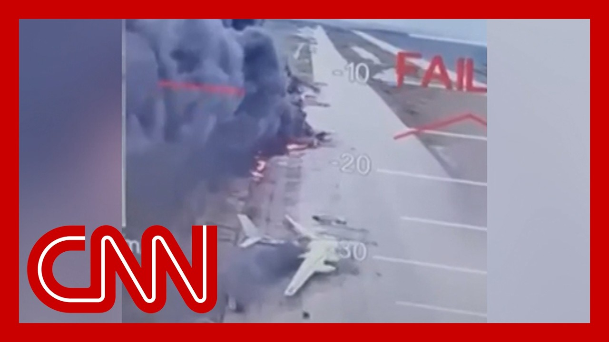

【乌克兰如何成功实施“蜘蛛网行动”】
Summary: Russian and Ukrainian officials met for peace talks in Istanbul but made no major breakthroughs, agreeing only on a prisoner exchange while remaining divided on a ceasefire. Moscow demanded Ukraine surrender four regions, while Ukraine conducted daring drone strikes deep inside Russia, damaging Russian bombers and boosting morale.
摘要： 俄乌官员在伊斯坦布尔举行和谈，但未取得重大突破，仅同意交换战俘，在停火问题上仍存分歧。莫斯科要求乌克兰割让四个地区，而乌克兰则对俄罗斯境内发动大胆无人机袭击，摧毁俄军轰炸机并提振士气。

⏱️ Estimated Reading Time: 14 min
Russian and Ukrainian officials met for a second round of peace talks in Istanbul on Monday, but the discussions ended nearly as soon as it began and without any major breakthroughs.
俄乌官员周一在伊斯坦布尔举行第二轮和谈，但谈判几乎一开始就结束，未取得重大突破。
Now both sides did agree to work on a new prisoner exchange.
双方同意进行新一轮战俘交换。
However, on the matter of a ceasefire, statements from both delegations indicate that neither side budged on their positions.
然而，关于停火问题，双方代表团的声明表明立场均未松动。
Moscow, for its part, maintained its maximalist terms, which includes Ukraine's surrender of four mainland regions that Russia attempted to illegally annex soon after the invasion in 2022.
莫斯科坚持其极端要求，包括乌克兰割让2022年入侵后试图非法吞并的四个大陆地区。
That's according to details of the peace memorandum reported by Russian state media.
这是俄罗斯官方媒体报道的和平备忘录细节。
The direct peace talks came just one day after Ukraine's daring drone strike operation targeting airfields deep inside Russia.
直接和谈前一天，乌克兰对俄罗斯境内深处的空军基地发动大胆无人机袭击。
The Ukrainian president praised the brilliant operation, saying that the strikes were launched out of necessity.
乌克兰总统称赞这一出色行动，称袭击是出于必要。
Many who demonstrate this, we don't want to demonstrate our strength.
我们展示这些并非为了炫耀力量。
We are demonstrating it because the enemy doesn't want to stop.
我们展示是因为敌人不愿停止。
We demonstrate it in a fair way on military targets, and we don't only demonstrate it to the Russian aggressors, but also to all those allies that once were strong allies and have now started doubting us.
我们以公平方式打击军事目标，不仅向俄罗斯侵略者展示，也向那些曾坚定支持如今却怀疑我们的盟友展示。
The trust towards Ukrainians and faith in Ukraine has returned.
对乌克兰人的信任和对乌克兰的信心已回归。
Nick Paton Walsh breaks down how Ukraine carried out the operation.
尼克·帕顿·沃尔什解析乌克兰如何实施此次行动。
A bird's eye view of humiliation.
俯瞰屈辱的鸟瞰图。
Ukrainian drones halfway across Russian Siberia.
乌克兰无人机穿越俄罗斯西伯利亚半途。
Seconds from hitting the Kremlin's most prized bombers.
距击中克里姆林宫最珍贵轰炸机仅剩数秒。
But the data was bad for Moscow.
但对莫斯科而言数据糟糕。
117 drones hitting 41 long range bombers across Russia.
117架无人机击中俄罗斯境内41架远程轰炸机。
Ukrainian security source said a torn up skyline here in Bel Air.
乌克兰安全消息人士称贝尔艾尔上空支离破碎。
Exactly what Moscow dreaded.
正是莫斯科所恐惧的。
And Ukraine needed a boost to its flagging morale, damaging Russia's war machine, for sure, but maybe also its calculus in peace talks.
乌克兰需提振低迷士气，重创俄罗斯战争机器无疑，也可能改变其在和谈中的盘算。
Our Operation Spider Web yesterday proved that Russia must feel what its losses mean.
昨日的"蜘蛛网行动"证明俄罗斯必须感受其损失意味着什么。
That is what will push it to war.
这将迫使其走向战争。
Diplomacy in Ukraine hits.
乌克兰外交受挫。
It cuts 40 500km away from Ukraine, where Google Earth still shows similar propeller driven aircraft in the open.
距乌4000公里处，谷歌地球仍显示类似螺旋桨飞机露天停放。
But they also struck a linear right on the Arctic Circle.
但他们还精确打击了北极圈沿线目标。
Similar planes, also on Google.
类似飞机同样可见于谷歌。
Another example of something that just was not meant to happen in Russia's brutal war of choice for how was as extraordinary.
这是俄罗斯发动的残酷战争中本不该发生的又一例证，其方式非同寻常。
Security service head Vasyl Malach commenting here.
安全部门负责人瓦西尔·马拉克在此评论。
Finally, today, as there is a drone, I and releasing these images of the wooden mobile homes, they use the roof cavities off to hide the drones before their release.
最后，今日随着无人机出现，我发布这些木质活动房屋图像，他们利用屋顶空腔隐藏待发无人机。
Once Ukraine said all their operatives were out of Russia, the planes hit mainly the Tupolev 95 and two of 22.
乌克兰称所有特工撤离俄罗斯后，主要击中了图-95和两架图-22。
The Ukrainian source said aging, easy to damage, hard to replace.
乌方消息称这些飞机老化易损难替换。
They were probably behind the nightly terrors that beset Ukrainian civilians.
它们可能是困扰乌克兰民众的夜间恐怖袭击元凶。
Whether these strikes make a dent in this daily toll will take weeks to learn, but it may also damage the Kremlin quicker away from the front lines.
这些袭击能否减少每日伤亡需数周评估，但也可能更快打击远离前线的克里姆林宫。
Its pride hit hard, although state TV put on a fierce display of why Russia has been pummeling Ukraine so relentlessly.
其尊严受重创，尽管国家电视台激烈展示俄罗斯为何无情打击乌克兰。
It may also to change its thinking, perhaps towards peace talks that continued Monday in Istanbul and of how long Russia can sustain this war.
这可能改变其想法，或许转向周一在伊斯坦布尔继续的和谈，以及俄罗斯能维持战争多久。
If Ukraine keeps throwing painful surprises its way.
若乌克兰持续给予其痛苦打击。
Nick Paton Walsh, CNN, London.
CNN尼克·帕顿·沃尔什于伦敦报道。
Here now is military analyst retired Colonel Cedric Leighton.
现在有请军事分析师、退役上校塞德里克·莱顿。
Cedric, just your reaction when you heard I mean, this is estimates of some $7 billion in unrecoverable damage to these triple of, bombers that, predate Russian independence.
塞德里克，听闻这些早于俄罗斯独立的轰炸机遭受约70亿美元不可挽回损失时你的反应是？
I mean, this was really the Soviet, aircraft that were targeted.
这些实际是苏联时期的飞机成为目标。
Ukraine says as many as 40.
乌克兰称多达40架。
That number may be in question, but Russia didn't have more than 100.
数字或有争议，但俄罗斯拥有不超过100架。
And the significance here is that these were capable of carrying out longer range ballistic missile attacks into Ukraine.
关键在于这些飞机能对乌克兰实施更长距离弹道导弹攻击。
How big of a setback is this for Russia?
这对俄罗斯是多大的挫折？
This could be a huge setback for Russia.
这对俄罗斯可能是巨大挫折。
Be on a.
处于。
And one of the key things about this is that, the mechanisms that, we'll call the mechanisms for a second here, these aircraft that the Ukrainians hit, the, the tuple of, 95 and 22, aircraft, they are not only the aircraft that were used to attack Ukraine using cruise missiles, but they're also part of the nuclear deterrent that the Soviet Union and then Russia, created, not only for the Cold War, but in the post-Cold War period.
关键点在于，乌军击中的图-95和图-22不仅是使用巡航导弹攻击乌克兰的飞机，还是苏联及后来俄罗斯建立的核威慑力量一部分，涵盖冷战及冷战后时期。
And that's a significant thing because, basically what the Ukrainians have done is taken now probably about a third or so of those aircraft, from the Russian inventory.
这很重要，因为乌军可能已摧毁俄军约三分之一此类飞机。
And that makes it very hard for the Russians to continue to prosecute the war like they did.
这使得俄罗斯难以继续以往方式作战。
And the one other thing that they did was they took out an 850, which is the so-called mainstay aircraft.
他们还摧毁了一架850型"支柱"飞机。
That's an Awacs like aircraft.
这是类似预警机的飞机。
That means command and control.
意味着指挥控制能力。
So now command and control is much more difficult for the Russians to exercise while they attack, Ukrainian targets.
因此俄军在攻击乌克兰目标时更难实施指挥控制。
So this is a very significant development.
这是非常重要的事态发展。
You know that it took about 18 months to plan.
据悉策划耗时约18个月。
and the lieutenant general, who's head of Ukraine's, main security and intelligence agency, the SBU, said that these were ordered specifically from President Zelensky.
乌克兰安全局局长中将称这是泽连斯基总统特别下令。
and in addition to the task of smuggling the drones into the country, they, followed later by small wooden mobile cabins, people familiar with the planning said.
知情人士称除走私无人机入境外，还后续使用小型木质活动房屋。
And then the drones were concealed underneath these cabins, where the roofs ultimately retracted after months of just sitting there.
无人机藏于这些房屋底部，屋顶在数月静置后最终收缩。
and we've seen some of the video of these drones then flying out and striking these air facilities throughout Russia.
我们已看到部分视频显示这些无人机飞出并袭击俄境内空军设施。
And, you know, it's important to highlight the size and scale of Russia and where these, aircraft were located.
需强调俄罗斯幅员及这些飞机部署位置。
the impact that has now in terms of how safe and secure the Russian Air Force and the Russian military in general feels about where they store their military equipment.
这对俄空军及军方存储装备的安全感产生的影响。
Yeah, this is a significant vulnerability.
这暴露出重大弱点。
The Russians clearly thought that they were going to be safe, especially in Siberia.
俄方显然认为西伯利亚等地是安全的。
although there have been some indications that other air bases that the Russians have once closer to Ukraine, were much more vulnerable to Ukrainian attacks.
尽管有迹象表明靠近乌克兰的其他俄空军基地更易受攻击。
And that's kind of obvious from a geographic standpoint.
从地理角度看这很明显。
But what the Ukrainians did was they, in essence, opened up, Russia to these so-called First-Person view, drones and these drones, don't have a very long range, but the very fact that they were able to, in essence, subvert the Russian, trucking system, to get these drones and those into those wooden houses through and then kind of do a James Bond like, retract the roof.
但乌军实质上是利用第一视角无人机突破俄防线，这些无人机航程虽短，但通过颠覆俄运输系统将其送入木屋，再以007式收缩屋顶方式发动。
I, you know, type a system where they actually move the roofs back when they were ready to launch.
他们准备发射时实际移动屋顶。
That, really shows a very high degree of planning, very sophisticated planning effort.
这显示出极高水平的周密策划。
And, you know, those 18 months or so that it took to plan this, was basically 18 months very well spent, because they not only looked at the target on the Ukrainian side, but they assessed exactly what it would take to go after all of these, all of these different targets, all of these different air bases.
这18个月策划时间用得其所，不仅评估乌方目标，还精确计算打击所有不同空军基地所需条件。
that they hit, and these air bases included, you know, places in Siberia like we're seeing here, and then also places as far north as the Vermont region.
这些基地包括西伯利亚及最北至弗蒙特地区。
And, on the Colo Peninsula in northern Russia, above the Arctic Circle.
以及北极圈以北的俄罗斯科拉半岛。
So these are the kinds of things that the Ukrainians did.
这就是乌军的行动。
And the planning, was masterful.
策划堪称精湛。
It's basically on the scale of what you would have seen in World War Two, when Winston Churchill told his version of the SBU, the Special Operations Executive in his case, in back in 1940, he said, set Europe ablaze.
基本达到二战水平，如同1940年丘吉尔对其特别行动处所说"让欧洲燃烧"。
Well, the Ukrainians have said part of Russia ablaze, and it's a very significant development.
如今乌军让俄罗斯部分地区燃烧，这是重大进展。
Yeah, I can't help but think of President Zelenskyy now in the Oval Office, going back to that disastrous meeting in February when President Trump and JD Vance famously said to him, you don't have the cards.
不禁想到泽连斯基如今在椭圆形办公室，回想2月特朗普和JD·万斯对其名言"你没有筹码"的灾难性会晤。
and knowing that he had at least this card up his sleeve and had been in the works for months, could any of this happened, in your view, without the aid of U.S. intelligence?
已知他至少握有这张筹备数月的底牌，你认为若无美国情报援助这可能实现吗？
Yes, it could have.
是的，有可能。
I mean, there's certain things that the Ukrainians certainly benefited from when it when it comes to U.S. intelligence.
乌方确实从美国情报中获益。
but the fact is that, you know, there's satellite imagery available through, private open sources such as Maxar Technologies, so they don't necessarily need, the US to do this.
但事实上有Maxar等私营开源卫星图像，不一定需要美国。
They could have also gotten some intelligence from the Europeans.
也可能从欧洲获得情报。
but the Ukrainians have a very extensive intelligence network within Russia, and they've kind of proven that by conducting operations like this.
但乌克兰在俄拥有广泛情报网络，此类行动已证明这点。
And one thing we have to note is what President Zelensky said when he said that the, quote, office, unquote, meaning the, I guess operational headquarters of at least part of this operation was right next to one of the regional headquarters of the FSB, the Russian State Security Service.
需注意泽连斯基称"办公室"——即此次行动指挥部——就位于俄联邦安全局某地区总部旁边。
So, they were doing this right under the noses of the Russians.
他们在俄方眼皮底下行动。
And that, is certainly a very, very significant development from an intelligence perspective as well as from an operational perspective.
从情报和行动角度看都是极其重要的事态发展。
Now, it will, of course, depend on how long the effects are.
当然效果能持续多久尚待观察。
you know, this might not be as long lasting a thing as the Ukrainians would like, but I think the effects are certainly there psychologically kind of like the Doolittle Raid.
可能不如乌方期望的持久，但心理效果确实存在，类似杜立特空袭。
You know, gee, is another World War Two analogy where we, you know, attacked to the Japanese and did it off of aircraft carriers.
这是另一二战类比——从航母起飞攻击日本。
And the Japanese weren't expecting that at that particular point in time.
当时日本未预料到这点。
So the Russians clearly weren't expecting this.
显然俄罗斯也未预料到此行动。
And that's this is the result that we see right now.
这就是我们现在看到的结果。
I would imagine screenwriters are already busy working on Spider's Web and how they could turn that into a film as well.
想必编剧已在忙于将"蜘蛛网"改编成电影。
Cedric Leighton, thank you so much.
塞德里克·莱顿，非常感谢。